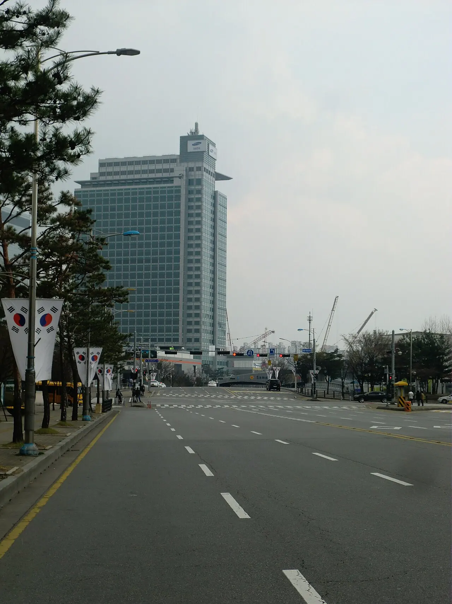

삼성전자의 순이익을 예측할 때 가장 먼저 봐야 할 숫자는 2026년 1분기 47.2조원입니다. 2025년 연간 순이익이 45.2조원이었는데, 한 분기 순이익이 직전 연간 순이익을 넘어섰습니다. 이 숫자는 단순한 호실적이 아니라 메모리 가격, AI 서버 투자, 고부가 제품 비중이 동시에 맞물렸을 때 삼성전자 이익 체력이 어디까지 커질 수 있는지를 보여주는 기준선입니다.
다만 이 글은 특정 가격의 매수나 매도를 권하는 투자 조언이 아닙니다. 삼성전자의 순이익이 어느 규모로 언제까지 유지될 수 있는지 가늠하려면 최근 분기 숫자를 그대로 네 배 하는 방식보다, 메모리 가격이 얼마나 오래 버티는지와 HBM 공급 능력이 얼마나 빨리 이익으로 바뀌는지를 나눠 봐야 합니다. 순이익은 좋은 제품만으로 유지되지 않고, 가격, 출하량, 원가, 환율, 세금, 파운드리 손익이 함께 만든 결과입니다.
제 기준 시나리오는 2026년 연간 순이익 150조원에서 180조원 사이입니다. 1분기만큼 강한 숫자가 매 분기 반복되기는 어렵지만, AI용 메모리와 서버 수요가 하반기까지 버티면 분기 순이익 30조원 이상은 2026년 말까지 이어질 가능성이 있습니다. 반대로 40조원대 분기 순이익은 메모리 가격 상승과 HBM 판매 확대가 동시에 유지될 때 가능한 상단에 가깝습니다.
47조원이 기준선을 바꿨습니다

2026년 1분기 실적에서 눈에 띄는 대목은 매출보다 이익률입니다. 매출 133.9조원, 영업이익 57.2조원, 순이익 47.2조원이라는 조합은 과거 스마트폰과 범용 메모리 중심의 삼성전자 이익 구조와 다르게 읽어야 합니다. 매출이 커진 것보다 매출총이익률과 영업이익률이 크게 올라간 점이 더 중요합니다.
이 숫자가 가능했던 배경은 DS 부문입니다. 반도체 부문 영업이익이 53.7조원으로 전사 이익의 대부분을 만들었습니다. 모바일과 가전이 안정적인 바닥을 깔아 주는 동안, 메모리가 이익의 상단을 열었습니다. 그래서 삼성전자 순이익 예측은 전사 소비자 제품 판매량보다 반도체 가격과 제품 믹스에 더 민감해졌습니다.
투자자가 조심해야 할 점도 여기에 있습니다. 한 분기 순이익 47조원은 삼성전자의 새로운 가능성을 보여주지만, 영구적인 기본값으로 보기는 어렵습니다. 메모리 업황은 공급 조절과 고객 재고 사이클에 따라 갑자기 식을 수 있습니다. 2026년 순이익이 크게 늘어나는 그림은 합리적이지만, 2027년에도 같은 속도로 유지된다고 보는 것은 훨씬 더 높은 가정이 필요합니다.
메모리 가격이 버티는 시간
삼성전자 순이익의 유지 기간은 범용 D램과 낸드 가격이 얼마나 천천히 꺾이는지에 달려 있습니다. HBM이 주목을 받지만, 전체 이익에는 서버 D램, DDR5, 엔터프라이즈 SSD, 모바일 메모리까지 넓은 제품군이 함께 영향을 줍니다. 고부가 제품이 강해도 범용 제품 가격이 빠르게 내려가면 순이익 상단은 낮아질 수 있습니다.
현재 흐름만 놓고 보면 2026년 하반기까지는 순이익의 높은 레벨이 이어질 여지가 큽니다. 빅테크의 AI 데이터센터 투자가 계속되고, 서버용 메모리 주문이 단기간에 크게 줄어들 가능성은 낮아 보입니다. 여기에 PC와 모바일 고객의 재고 보충 수요가 붙으면 분기 순이익 30조원대는 충분히 방어 가능한 영역으로 보입니다.
문제는 공급입니다. 메모리 가격이 좋아지면 업계 전체가 생산 능력을 늘리고 싶어집니다. 공급 확대가 실제 출하로 이어지는 시점이 2027년 상반기부터 눈에 띄면 가격 상승분이 둔화될 수 있습니다. 이 경우 2027년 연간 순이익은 90조원에서 120조원 사이로 내려오는 시나리오를 열어 두는 편이 현실적입니다.
HBM은 이익의 두께를 정합니다
삼성전자 순이익이 2027년에도 130조원 이상을 지키려면 HBM이 단순한 회복 재료가 아니라 이익 방어선이 되어야 합니다. HBM은 범용 메모리보다 고객 인증, 패키징, 수율, 납기 신뢰가 중요합니다. 같은 용량을 팔아도 제품 단가와 마진이 달라서 순이익에 주는 영향이 큽니다.
삼성전자는 HBM4와 고성능 메모리 제품을 앞세우고 있지만, 시장은 발표보다 고객 채택을 먼저 확인하려 합니다. AI 가속기 고객이 실제 물량을 얼마나 배정하는지, 경쟁사와의 가격 차이가 어떤지, 베이스 다이와 첨단 패키징 수율이 안정적인지가 중요합니다. 이 부분이 좋아지면 2027년 순이익 둔화 폭은 생각보다 작아질 수 있습니다.
반대로 HBM 점유율 회복이 늦어지고 범용 메모리 가격만 먼저 식으면 순이익은 빠르게 얇아집니다. 이 경우 2026년의 높은 이익은 슈퍼사이클의 고점으로 남고, 2027년에는 80조원에서 100조원 안팎의 정상화 구간으로 내려갈 수 있습니다. 삼성전자 주가가 순이익을 높게 평가받으려면 HBM이 숫자로 확인되어야 합니다.
파운드리는 방어선이 아직 약합니다
순이익을 볼 때 파운드리도 빼놓기 어렵습니다. 삼성전자는 메모리에서 큰 이익을 내고 있지만, 파운드리는 선단 공정 투자와 고객 확보 비용이 큽니다. 수주가 늘어도 초기에는 감가상각과 수율 부담 때문에 이익 기여가 제한될 수 있습니다. 파운드리 손실이 줄어드는 속도는 순이익의 하방을 결정합니다.
삼성전자의 강점은 메모리와 로직, 패키징을 함께 묶을 수 있는 구조입니다. HBM4처럼 메모리와 파운드리 기술이 동시에 들어가는 제품에서는 이 장점이 더 중요해질 수 있습니다. 그러나 이 장점이 재무제표에 반영되려면 고객이 설계를 맡기고, 수율이 올라가고, 공장 가동률이 개선되어야 합니다.
따라서 2026년에는 메모리가 순이익을 끌어올리고, 파운드리는 손실 축소 여부를 확인하는 구간으로 보는 편이 낫습니다. 2027년에 파운드리 적자가 줄면 메모리 가격 둔화를 일부 상쇄할 수 있습니다. 반대로 파운드리 부담이 길어지면 메모리 고점 이후 순이익 하락이 더 가팔라질 수 있습니다.
2027년은 숫자가 식는 시험대
삼성전자 순이익의 유지 기간을 한 문장으로 정리하면, 2026년 말까지는 높은 이익 체력이 유지될 가능성이 크고 2027년부터는 둔화 폭을 확인해야 합니다. 2026년 연간 순이익은 150조원에서 180조원 사이를 기본 범위로 볼 수 있습니다. 2027년에는 메모리 가격과 HBM 점유율에 따라 90조원에서 130조원대까지 넓게 열어 두는 것이 안전합니다.
상단 시나리오는 HBM4 고객 인증이 순조롭고, AI 서버 투자가 식지 않으며, 파운드리 손실이 줄어드는 경우입니다. 이때 삼성전자는 2027년에도 연간 순이익 130조원 안팎을 방어할 수 있습니다. 중립 시나리오는 범용 메모리 가격이 서서히 내려가고 HBM이 일부 방어하는 흐름입니다. 이 경우 100조원 안팎의 순이익이 더 자연스러운 숫자입니다.
하단 시나리오는 공급 증가가 빠르고 고객 재고가 쌓이며, HBM 점유율 회복이 예상보다 늦어지는 경우입니다. 이때는 순이익이 80조원대까지 내려갈 수 있습니다. 그래도 2025년의 45.2조원과 비교하면 높은 수준이지만, 2026년의 고점 숫자에 익숙해진 시장에는 둔화로 읽힐 가능성이 큽니다.
관련 영상
인포그래픽으로 보는 HBM4
앞으로 확인할 지표는 세 가지입니다. 첫째는 분기별 DS 영업이익률입니다. 둘째는 HBM과 서버용 고부가 메모리 매출 비중입니다. 셋째는 재고와 설비투자입니다. 순이익이 높은데 재고가 빠르게 쌓이거나 설비투자가 과열되면 다음 사이클의 부담이 커질 수 있습니다.
삼성전자 순이익은 이미 2025년의 회복 국면을 지나 2026년에는 고수익 국면에 들어섰습니다. 다만 투자자가 사야 할 것은 지나간 한 분기의 놀라운 숫자가 아니라, 그 숫자가 얼마나 오래 반복될 수 있는지에 대한 확률입니다. 2026년은 이익이 커지는 해, 2027년은 그 이익이 얼마나 덜 줄어드는지 검증받는 해로 보는 것이 더 차분한 판단입니다.